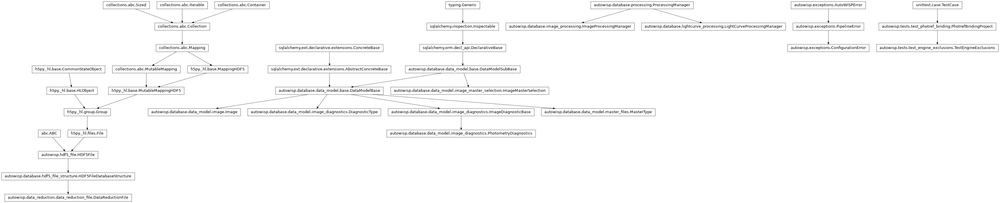
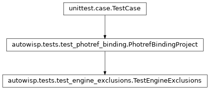

autowisp.tests.test_engine_exclusions module
Class Inheritance Diagram

Tests for the engine turning exclusion rules into the steps’ lists.
Before fit_magnitudes the engine lists the DR files of a batch the
magfit-exclusion-rule leaves out, and before epd and tfa the
observations of a single photometric reference the step’s rule leaves out,
by the values of the tfa-observation-id datasets. What a rule decides is
tested in test_exclusion_rules; these check what the engine asks it and
what it makes of the answer.
The project is the one of test_photref_binding, with a background that
differs between the channels, and a DR file for every observation, whose
header the engine reads the observation ids from.
- class autowisp.tests.test_engine_exclusions.TestEngineExclusions(methodName='runTest')[source]
Bases:
PhotrefBindingProject
The lists the engine hands
fit_magnitudes,epdandtfa.- detrending_excluded(step, configuration, bound)[source]
Return what the engine lists for step of the single photref.
- magfit_excluded(rule, members, *, master=None, step=None)[source]
Return what the engine lists for
fit_magnitudesof a batch.
- test_detrending_ids_must_be_header_keywords()[source]
Which is all the engine can read for an image.
- test_detrending_lists_observation_ids()[source]
Of the observations bound to the photref, in any channel.
farin G is excluded by the rule but bound to nothing, so is not fit with this photref, and is not listed.
- test_detrending_lists_the_photometry_a_slot_decides()[source]
Each observation under every photometry it is excluded in.
farin R is excluded in both apertures, so listed twice, andlongerin neither.
- test_detrending_without_a_rule_lists_nothing()[source]
Unset, or set only for the other step, or a step taking none.
- test_magfit_cannot_read_its_own_diagnostics()[source]
The engine says it is deciding before magnitude fitting.
- test_magfit_lists_every_channel_of_an_image_excluded()[source]
A rule quoting a channel decides for every channel in the batch.